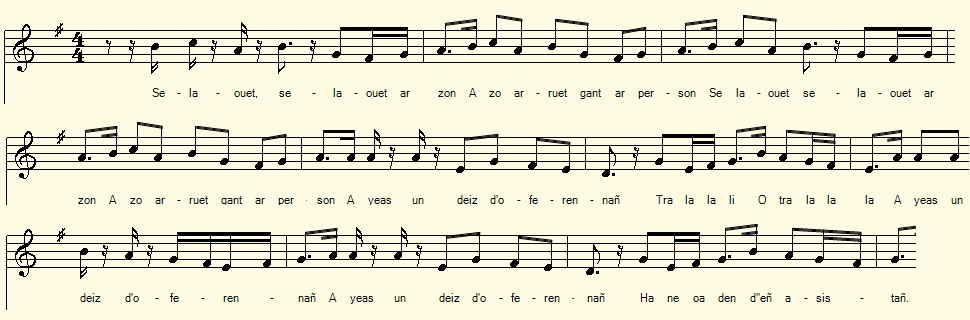

Ar person
Le recteur
The parson
Chant collecté par Théodore Hersart de La Villemarqué
dans le 2ème Carnet de Keransquer (pp. 138 - 139).

Mélodie: "Ar person"
Arrangement Christian Souchon (c) 2020
|
A propos de la mélodie: Inconnue. La présente mélodie s'appelle "Teñval an noz", "Sombre est la nuit" dont le rythme est en complète opposition avec le titre, tout comme avec le sujet de ce chant. A propos du texte Il semble que La Villemarqué ait été le seul à collecter ce chant. Les 2 pages où il est consigné, bien qu'à peine surchargées sont difficiles à lire et il a fallu compléter par des mots entre crochets [ ] les membres de phrases inachevés ou illisibles. On a supposé que la "guerre dans cette ville" fait allusion à la Révolution et que l'assassinat de la soeur du recteur, peut-être un prêtre jureur, est un épisode de la chouannerie. Cela expliquerait pourquoi ledit prêtre ne trouve personne pour assister aux offices, ni pour servir sa messe. Peut-être a-t-il même échappé à un piège tendu plus pour lui que pour sa soeur, laquelle s'inquiétait de voir son frère pactiser avec l'ennemi. Le paysan est au courant des nouvelles de la région, mais peut-être aussi du complôt tramé contre le prêtre. Les dernières strophes reconstituées tant bien que mal pourraient vouloir dire que le prêtre assermenté n'a plus sa place dans la localité et qu'il peut cêder son logement au pauvre vieux paysan. |
About the tune Unknown. This melody is called "Teñval an noz", "Dark is the night" whose beat is in complete opposition to the title, as well as to the subject of the present song. About the lyrics It seems that La Villemarqué was the collector of this song. The 2 pages where it is recorded, although nearly free of alteration, are difficult to read and it was necessary to add words in square brackets [] to the incomplete or illegible sentences. It was assumed that the "war in this town" alludes to the 1789 Revolution and that the assassination of the parson's sister, perhaps a "juror priest", is an episode of the Chouan civil war. This would explain why said priest finds no one to attend services, or to serve his mass. Perhaps he even escaped a trap intended for him rather than for his sister, who worried that her brother was taking sides with their enemy. The peasant is aware, not only of local news, but possibly also of the plot hatched against the priest. The last verses reconstituted as best we could, would mean that the sworn priest could no longer afford to stay in the town and that he would best give up his accommodation to the old peasant and his wife. |
|
BREZHONEK p. 138 1. Selaouet, [selaouet] ar zon A zo erruet gant ur person, A yeas un deiz, doferennañ Ha ne voa den deñ asistañ. 2. Ar kloc'h a zone alies Ha den na zeufe dan iliz 'met ur paourig a beizant N-deus servijet an oferenn. 3. Eñ deus servijet d'an aoter D'an aoter [santel] hor Salver. Pa oa an ofer'nn respontet Ar person en-deus eñ pedet: 4. - Deut-c'hwi ganin da zejuniñ! - Dre ma eo bet d'am zervijiñ! - C'hoar ar person yeas e koler: Welout ar paourig gant he breur 5. - Piv eo a zo dit ur mignon? [Piv eo a zo dit ur mignon?] Choar ar person yeas dar jardin Dre [ma deuet] d'ober gwall fin 6. Pa oa an daou war ar pred, p. 139 / 74 - Ne ouzes netra a nevez Pa vez o vont war ar bale? Me n'ouzon netra a nevez: Ema ar brezel er ger-se. 7. Ar paour a respontas:- [ Ar brezel] Gant gras Doue bado ket pell Hag ar gernez a finiso: N'ouzon, na Doue, pet b[loaz] a vo...- 8. Paour a vefe gwir peurlaret - Ha vefe gwir larez aze? - Ken gwir eo ar chelou 'Vel ho c'hoar er jardin marv! - (*) 9. Hi oa troet war he genoù Hag ar peder aer war o stroll. Ar person en-deuz distroet D(ezh)i da trugarekaat 10. Pa' n errru ar person en ti E plas ar puñs [ar paour a oe] Ar paour a c'houllas aluzen: - 'Deus eñ lojet mar be moyen 11. En ti bennak hag, en distro, An Aotrou Doue ho paeo Pa [vefe roet] o gwele [Penn] ar fin dam fried ha me (*) emezañ o klevout un tenn. KLT gant Christian Souchon |
TRADUCTION FRANCAISE p. 138 1. Venez écouter la chanson Celle d'un recteur qui dit-on Voulait dire l'office un jour Mais point de servants alentour. 2. Et la cloche avait beau sonner Le temple restait déserté A part un pauvre paysan. Qu'il recruta comme servant. 3. C'est lui qui fit l'enfant de choeur A l'autel de notre Sauveur Et qui des répons fut chargé A la demande du curé: 4. - Viens-t-en donc déjeuner chez moi - Tu l'as bien mérité, je crois. - Sa soeur fut prise de colère Voyant ce pauvre avec son frère. 5. - Qui donc est ce nouvel ami? Dites-moi cet ami, c'est qui?- Elle est parti dans le jardin Mais elle y fit mauvaise fin. 6. - Ils se promenaient dans les champs, p. 139 / 74 Que sais-tu des événements. Tu cours les routes tout le temps Plus rien de neuf ne se faufile: Depuis que c'est la guerre en ville. - 7. Le pauvre répondit: "La guerre, Si Dieu veut, ne durera guère La disette, je ne sais pas Pour combien d'années elle est là ...- 8. Mais le recteur l'interrompitt - Es-tu sûr de ce que tu dis? - Aussi sûr que, j'en suis certain, Votre soeur est morte au jardin! - (*) 9. Visage au sol elle est gisant Abandonnée aux quatre vents... Le recteur retouna son corps Pour lui dire adieu dans la mort. 10. Quand le recteur rentra chez lui Le pauvre attendait près du puits. Une aumône il lui demanda: - Nous logeriez-vous de surcroît? 11. C'est peu de chose et le Seigneur Vous paiera de votre bon coeur Si vous me procurez un lit Pour mourir, à ma femme aussi. - (*) Dit-il en entendant un coup de feu.. Traduction Christian Souchon (c) 2020 |
ENGLISH TRANSLATION p. 138 1. Come, listen to my song: it's new It is about a parson who Was once about his mass to say But no choirboy had crossed his way. 2. He rings the bell and rings in vain: Empty the premises remain, But for a country lad, poor wretch,. Whom for a mass servant he fetched. 3. The peasant acted as choir boy. Our Savior's altar was in joy Of the mass answered in the best Way at the parish priest's request: 4. - Would you come and have lunch with me - You well deserved my guest to be - Her sister got a bout of wrath: Her brother was now on a wrong path. 5. - Is that the kind of friends you choose, Is that the kind of friends you choose - Into the garden off she went. She was to come to a bad end 6. The two men had gone for a walk... p. 139 / 74 On current events had a talk: - You always were outside lately Some news will be useful to me: War keeps them out of this city. - 7. The poor replied: - Though going strong, With God's help the war won't last long As for the dearth, I do not know In how many years it will go ...- 8. The parson interrupted him: - Is it the truth you are speaking? - As true as I know in my heart Your sister lies dead in the yard! - (*) 9. Face on the ground the woman laid The four winds blowing round her head The parson managed her to heave To take of his sister his leave. 10. He went home after this farewell. The peasant waited near the well. Asking alms, like in some bad dreams: To lodge him were there ways and means? 11. 'T was but a small thing and the Lord Would pay for what he could afford. - Would you not help a poor man to A dying bed and his poor wife too? - (*) he said on hearing a shot. Translation Christian Souchon (c) 2020 |